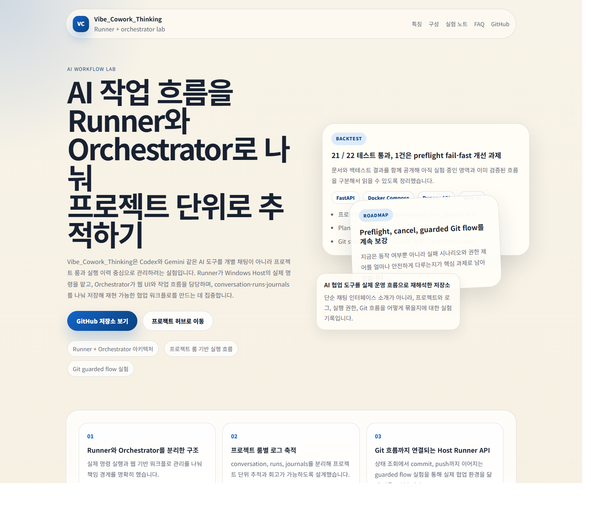

Runner
Windows host에서 codex, gemini, git 같은 실제 실행을 담당합니다.
Vibe_Cowork_Thinking은 Codex, Gemini 같은 도구를 단순 채팅이 아니라 프로젝트 방 단위의 실행 체계로 다루기 위해 만든 실험실입니다. 핵심은 대화 이력, 실행 결과, Git 흐름, 작업 단계를 같이 남기는 것입니다.

Windows host에서 codex, gemini, git 같은 실제 실행을 담당합니다.
웹 UI에서 프로젝트 룸과 작업 상태를 보여주고 흐름을 제어합니다.
conversation, runs, journal을 분리해 추적성과 재현성을 높입니다.
01 Plan
프로젝트 방에서 작업 목표를 정합니다.
02 Run
Runner가 실제 명령과 툴 실행을 수행합니다.
03 Review
실행 결과와 아티팩트를 확인합니다.
04 Track
Git 상태와 journal이 프로젝트 기록으로 남습니다.
중단된 작업을 이어서 실행하는 흐름이 있으면 운영 도구로서 가치가 커집니다.
에이전트별 결과 차이를 비교하는 뷰가 들어가면 실험 품질이 좋아집니다.
프로젝트별 허용 명령, 예산, 승인 정책을 분리하면 팀 도구로 확장하기 좋습니다.